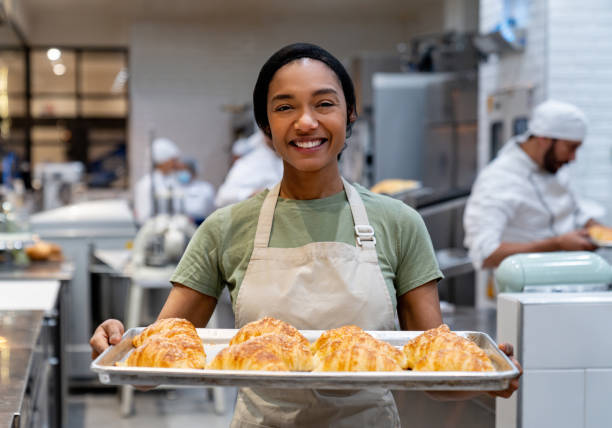

We also offer different services to our customers and the include:
We deal with other transporters in every corners of the country so as as to make sure that services are delivered with in a short period of time. This have made us the leading and trusted restaurant in the country due to our quick services and hospitality with our workers. Every order made is considered and we also offer free transport to our customers
WE ARE TOO PREVELAGED FOR YOUR POSITIVE RESPONSES .
WE ARE SO GREATFUL FOR BEING OUR CUSTOMER.
WE WISH U AN ENJOYABLE MEAL THANK YOU
